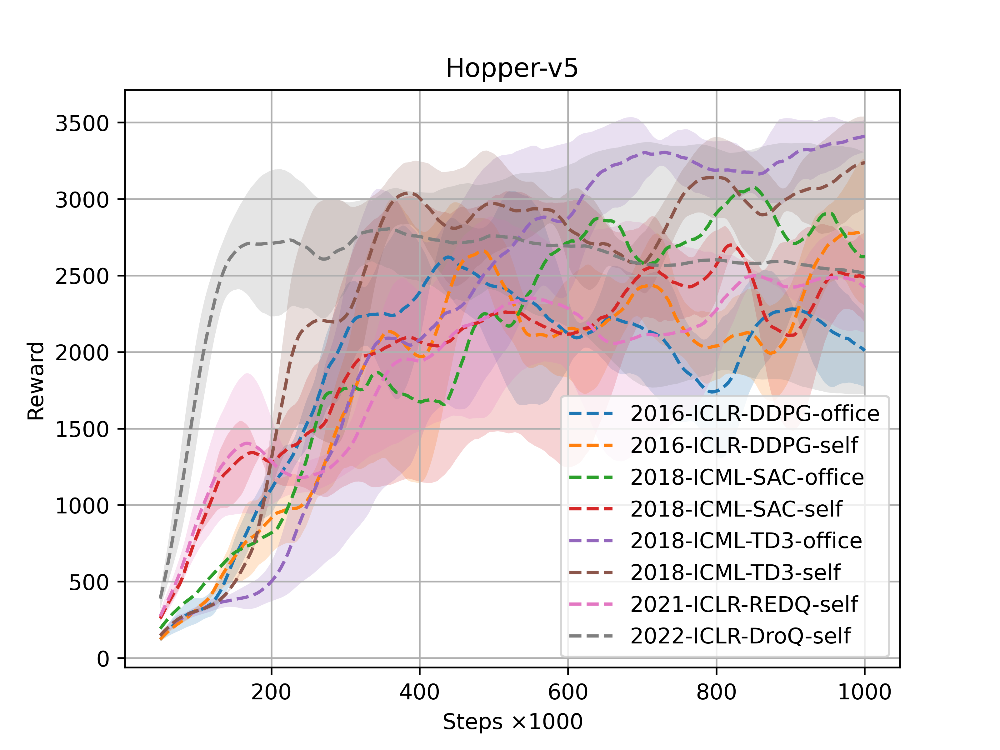
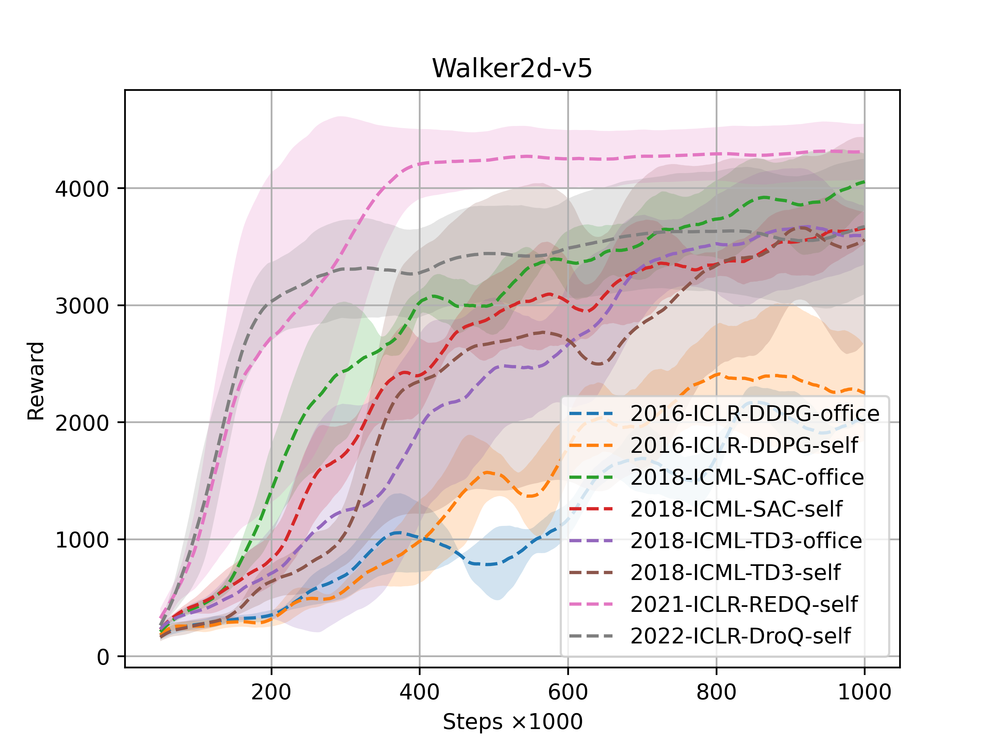

Introduction
Preface
Offline RL (Reinforcement Learning) 以提高样本效率而闻名，并且得到了广泛关注（实验室和工业界）。现有的offline RL算法层出不穷，但是并不知道哪种offline RL算法在某些特定任务中更加出色，以及大多数任务上哪种offline RL算法更甚一筹。
为了给予一些offlineRL性能一些客观评价，本人做了一个算法的性能评估。为此，我们需要进行如下的说明：
随着具身智能的火热，我们评估环境主要在机器人的运动和操作任务上进行，如MuJoCo（Hopper、Walker2d、Humanoid、Swimmer、HalfCheetah和Ant）、MetaWorld。
我们评估的offline RL算法有如下，主要包括经典的和最近的前沿offline RL：
特别说明：以下实验结果仅供参考学习，未经允许不得用于其它任何用途。
Caution
如果有“office”标识，则表示官方源代码实现；若有“self”标识，则表示本人的手写复现（非第三库的API）。
该项目的实验代码并未在此处公开，感兴趣的可以联系本人或查看官方代码。
Preview

MuJoCo:Hopper

MuJoCo: Walker2d
 MuJoCo: Humanoid
MuJoCo: Humanoid
 MuJoCo: Swimmer
MuJoCo: Swimmer
 MuJoCo: HalfCheetah
MuJoCo: HalfCheetah
 MuJoCo: Ant
MuJoCo: Ant
Video MuJoCo for Offline RL
Initial MuJoCo-Hopper
Final MuJoCo-Hopper
Initial MuJoCo-Walker2d
Final MuJoCo-Walker2d
Initial MuJoCo-Humanoid
Final MuJoCo-Humanoid
Initial MuJoCo-Swimmer
Final MuJoCo-Swimmer
Initial MuJoCo-HalfCheetah
Final MuJoCo-HalfCheetah
Initial MuJoCo-Ant
Final MuJoCo-Ant
Training Curve MuJoCo-Hopper
以下是经典或前沿Offline RL算法在MuJoCo-Hopper上的表现效果（左边视频是初始时期的策略表现，右边视频是经过100万样本数据训练后表现）：
2016-ICLR-DDPG-Office Initial MuJoCo-Hopper
2016-ICLR-DDPG-Office Final MuJoCo-Hopper
2016-ICLR-DDPG-self Initial MuJoCo-Hopper
2016-ICLR-DDPG-self Final MuJoCo-Hopper
2018-ICML-SAC-office Initial MuJoCo-Hopper
2018-ICML-SAC-office Final MuJoCo-Hopper
2018-ICML-SAC-self Initial MuJoCo-Hopper
2018-ICML-SAC-self Final MuJoCo-Hopper
2018-ICML-TD3-office Initial MuJoCo-Hopper
2018-ICML-TD3-office Final MuJoCo-Hopper
2018-ICML-TD3-self Initial MuJoCo-Hopper
2018-ICML-TD3-self Final MuJoCo-Hopper
2021-ICLR-REDQ-self Initial MuJoCo-Hopper
2022-ICLR-REDQ-self Final MuJoCo-Hopper
2022-ICLR-DroQ-self Initial MuJoCo-Hopper
2022-ICLR-DroQ-self Final MuJoCo-Hopper
Training Curve MuJoCo-Walker2d
以下是经典或前沿Offline RL算法在MuJoCo-Walker2d上的表现效果（左边视频是初始时期的策略表现，右边视频是经过100万样本数据训练后表现）：
2016-ICML-DDPG-office Initial MuJoCo-Walker2d
2016-ICML-DDPG-office Final MuJoCo-Walker2d
2016-ICML-DDPG-self Initial MuJoCo-Walker2d
2016-ICML-DDPG-self Final MuJoCo-Walker2d
2018-ICML-SAC-office Initial MuJoCo-Walker2d
2018-ICML-SAC-office Final MuJoCo-Walker2d
2018-ICML-SAC-self Initial MuJoCo-Walker2d
2018-ICML-SAC-self Final MuJoCo-Walker2d
2018-ICML-TD3-office Initial MuJoCo-Walker2d
2018-ICML-TD3-office Final MuJoCo-Walker2d
2018-ICML-TD3-self Initial MuJoCo-Walker2d
2018-ICML-TD3-self Final MuJoCo-Walker2d
2021-ICML-REDQ-self Initial MuJoCo-Walker2d
2021-ICML-REDQ-self Final MuJoCo-Walker2d
2022-ICML-DroQ-self Initial MuJoCo-Walker2d
2022-ICML-DroQ-self Final MuJoCo-Walker2d
Training Curve MuJoCo-Humanoid
以下是经典或前沿Offline RL算法在MuJoCo-Walker2d上的表现效果（左边视频是初始时期的策略表现，右边视频是经过100万样本数据训练后表现）：
2018-ICML-DDPG-office Initial MuJoCo-Humanoid
2018-ICML-DDPG-office Final MuJoCo-Humanoid
2018-ICML-DDPG-self Initial MuJoCo-Humanoid
2018-ICML-DDPG-self Final MuJoCo-Humanoid
2018-ICML-SAC-office Initial MuJoCo-Humanoid
2018-ICML-SAC-office Final MuJoCo-Humanoid
2018-ICML-SAC-self Initial MuJoCo-Humanoid
2018-ICML-SAC-self Final MuJoCo-Humanoid
2018-ICML-TD3-office Initial MuJoCo-Humanoid
2018-ICML-TD3-office Final MuJoCo-Humanoid
2018-ICML-TD3-self Initial MuJoCo-Humanoid
2018-ICML-TD3-self Final MuJoCo-Humanoid
2021-ICML-REDQ-self Initial MuJoCo-Humanoid
2021-ICML-REDQ-self Final MuJoCo-Humanoid
2022-ICML-DroQ-self Initial MuJoCo-Humanoid
2022-ICML-DroQ-self Final MuJoCo-Humanoid
Training Curve MuJoCo-Swimmer
以下是经典或前沿Offline RL算法在MuJoCo-Swimmer上的表现效果（左边视频是初始时期的策略表现，右边视频是经过100万样本数据训练后表现）：
2016-ICML-DDPG-office Initial MuJoCo-Swimmer
2016-ICML-DDPG-office Final MuJoCo-Swimmer
2016-ICML-DDPG-self Initial MuJoCo-Swimmer
2016-ICML-DDPG-self Final MuJoCo-Swimmer
2018-ICML-SAC-office Initial MuJoCo-Swimmer
2018-ICML-SAC-office Final MuJoCo-Swimmer
2018-ICML-SAC-self Initial MuJoCo-Swimmer
2018-ICML-SAC-self Final MuJoCo-Swimmer
2018-ICML-TD3-office Initial MuJoCo-Swimmer
2018-ICML-TD3-office Final MuJoCo-Swimmer
2021-ICML-REDQ-self Initial MuJoCo-Swimmer
2021-ICML-REDQ-self Final MuJoCo-Swimmer
2022-ICML-DroQ-self Initial MuJoCo-Swimmer
2022-ICML-DroQ-self Final MuJoCo-Swimmer
Training Curve MuJoCo-HalfCheetah
Video for MuJoCo-HalfCheetah
2016-ICML-DDPG-office Initial MuJoCo-HalfCheetah
2016-ICML-DDPG-office Final MuJoCo-HalfCheetah
2016-ICML-DDPG-self Initial MuJoCo-HalfCheetah
2016-ICML-DDPG-self Final MuJoCo-HalfCheetah
2018-ICML-SAC-office Initial MuJoCo-HalfCheetah
2018-ICML-SAC-office Final MuJoCo-HalfCheetah
2018-ICML-SAC-self Initial MuJoCo-HalfCheetah
2018-ICML-SAC-self Final MuJoCo-HalfCheetah
2018-ICML-TD3-office Initial MuJoCo-HalfCheetah
2018-ICML-TD3-office Final MuJoCo-HalfCheetah
2018-ICML-TD3-self Initial MuJoCo-HalfCheetah
2018-ICML-TD3-self Final MuJoCo-HalfCheetah
2021-ICML-REDQ-self Initial MuJoCo-HalfCheetah
2021-ICML-REDQ-self Final MuJoCo-HalfCheetah
2022-ICML-DroQ-self Initial MuJoCo-HalfCheetah
2022-ICML-DroQ-self Final MuJoCo-HalfCheetah
2016-ICML-DDPG-office Initial MuJoCo-Ant
2016-ICML-DDPG-office Final MuJoCo-Ant
2016-ICML-DDPG-self Initial MuJoCo-Ant
2016-ICML-DDPG-self Final MuJoCo-Ant
2018-ICML-SAC-office Initial MuJoCo-Ant
2018-ICML-SAC-office Final MuJoCo-Ant
2018-ICML-SAC-self Initial MuJoCo-Ant
2018-ICML-SAC-self Final MuJoCo-Ant
2018-ICML-TD3-office Initial MuJoCo-Ant
2018-ICML-TD3-office Final MuJoCo-Ant
2018-ICML-TD3-self Initial MuJoCo-Ant
2018-ICML-TD3-self Final MuJoCo-Ant
2021-ICML-REDQ-self Initial MuJoCo-Ant
2021-ICML-REDQ-self Final MuJoCo-Ant
2022-ICML-DroQ-self Initial MuJoCo-Ant
2022-ICML-DroQ-self Final MuJoCo-Ant